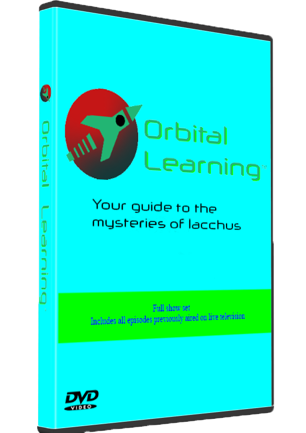

Recognize Iacchan Threats

Memory Shadow

Footprint Shadow
Home Hider
Unseen Whisperer
Our Role: Providing Knowledge for a Changing World
This television series was created for the soul purpose of educating kids and adults alike on the many odd and strange beings that inhabit our new moon, Iacchus. Thanks to government funding, we can keep the public well-informed. Thank you to all of our viewers for making all of this possible! In each episode, we will take a trip into learning all about the strange life forms that inhabit our new moon. From the vital timing of Memory Shadows to the obscured Home Hiders, our goal is to ensure that you have the proper knowledge you need to keep yourself protected from these entities. As always, we keep these as our top priorites:
- Giving useful safety tips
- Family friendly approach
- Fascinating educational facts
- Providing content as quick as possible
We’ll provide not only fascinating facts, but also critical tips on how to keep yourself and your loved ones safe. Stay tuned, stay curious, and join us at 6:00 PM every Saturday as we unveil the secrets of Iacchus, one entity at a time.
What others have to say about us
I have no idea where I'd be without Orbital Learning! The guides they have given have not only helped educate me, but they've saved my life! A few weeks ago I saw my bedroom lamp sway ever so slightly. At first, I thought nothing of it, but then I remembered their Home Hider episode. I stayed calm and avoided panicking, and the closer I looked, the more I noticed that my demise was one wrong move away. Thanks to their advice, I managed to slowly escape my room unscathed. I truly owe them everything!" - Survivor of a Home Hider encounter
Until Orbital Learning launched, the sudden appearance of Iacchus in our night sky frightened most everyone I know. That's where Orbital Learning came in and helped put some of our anxieties at ease so that we now know how to deal with any possible Iacchan threats. Ever since Orbital Learning has aired, me and my family have all felt much safer with the helpful survival tips they have provided us." - Regular Orbital Learning viewer
Seen anything suspicously inhuman? Report your sightings here!
Entity Sighting Report

Watch the first episode here! - Episode 1
(Check our store page for details)

Quick Survival Tips:
- - Memory Shadows:
Stay asleep from 1:00 AM to 3:00 AM - - Footprint Shadows:
Avoid areas of complete darkness - - Home Hiders:
Be cautious around unfamiliar furniture - - The Unseen Whisperer:
Don't grow complacent with his presence